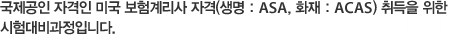

- ASA : Associate of Society of Actuaries
- ACAS : Associate of Casualty Actuarial Society

미국보험계리사협회(The Society of Actuaries, SOA / Casualty Acturial Society, CAS)가 주관하고 있는 美 보험계리사 시험은 준계리사 자격 취득을 위한 생/손보 공통 5개 과목(P, FM, MFE, MLC, C)과정과 正계리사 자격 취득을 위한 생명보험 특화(Exam FAP) 과목과 손해보험 특화(Exam 5, Exam 6) 과목으로 구성되어 있습니다.
| 구분 | 교과목 | ASA/ACAS 단계 | 교육형태 | ’12년 | ’13년 | ’14년 | |||
|---|---|---|---|---|---|---|---|---|---|
| 상반기 | 하반기 | 상반기 | 하반기 | 상반기 | 하반기 | ||||
| 공통 | 확률 / 통계 | Exam1 (P) | 온라인 + 스쿨링 |
○ | ○ | ○ | ○ | ○ | ○ |
| 금융 수학 | Exam2 (FM) | ○ | ○ | ○ | ○ | ○ | ○ | ||
| 수리 금융 | Exam3 (MFE) | 주말집합 + 온라인 + 스쿨링 |
○ | ○ | |||||
| 보험 수리 | Exam3 (MLC) | ○ | ○ | ||||||
| 손실 모형 | Exam4 (C) | ○ | ○ | ||||||
| ASA | 계리 Control Cycle | Exam FAP | |||||||
| ACAS | 보험요율 산출/지급준비금 | Exam 5 | |||||||
| 제규정 및 재무보고 | Exam 6 | ||||||||
- Exam 1(P) = 확률/통계 (Probability)
- Exam 2(FM) = 금융/수학 (Financial Mathematics)
- Exam 3(MFE) = 수리금융 (Actuarial Model in Financial Economics)
- Exam 3(MLC) = 보험수리 (Actuarial Model in Life Contingencies)
- Exam 4(C) = 손실모형 (Construction of Actuarial Models)


- 美 IOWA대학교 보험계리학 博士
- 美 IOWA대학교 보험계리학 碩士
- 서울대학교 통계학 碩士
- 서울대학교 수학 學士
- 現)성균관대학교 보험계리학과 학과장
- 한국 계리학회 이사
- 계리학 연구 편집 위원장
- 시카고대학교 통계학 博士
- 서울대학교 통계학 碩士
- 서울대학교 계산통계학 學士
- 現)고려대학교 통계학과 敎授
- 前)퍼듀대학교 통계학과 敎授
- 美 IOWA대학교 보험계리학 博士
- 美 IOWA대학교 보험계리학 碩士
- 서울대학교 통계학 碩士
- 서울대학교 수학 學士
- 現)숭실대학교 정보통계·보험수리학과 敎授